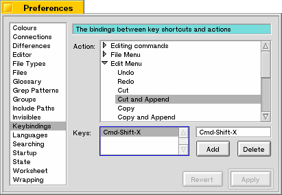

Key Bindings
On this page you can assign key shortcuts to actions and (menu-)commands. You can do this by first clicking an action or command from the big list on the top. If this action already contains one or more keybindings, these key combinations will be displayed in the list on the left-hand side.
To delete one of these bindings, you can select it and click Delete.
To bind a new key combination to the action selected, you can click on the edit box and type the combination. This combination can consist of one or two key strokes. If you mistype a combination, type it again until it is correctly displayed. All this may sound confusing at first, but I suggest you just try it.
If you assign a key combination consisting of two keystrokes to an action, the first of the two will be considered to be a prefix. It is therefore not possible to use this prefix as a sole key combination for another action.
Last updated: 05/17/98
Copyright 1997,1998, © Hekkelman Programmatuur,
info@hekkelman.com